Bangladesh is undoubtedly a unique and fascinating destination for travelers looking to experience something off the beaten path. From its stunning natural beauty and rich cultural history to its friendly and welcoming locals, there is much to discover in this diverse and vibrant country. Whether you're interested in exploring ancient temples, sipping tea on a stunning plantation, or relaxing on the world's longest natural sandy beach, Bangladesh has something for everyone. For those seeking adventure, the Rangamati Hill District and the Sundarbans, home to the Royal Bengal Tiger, offer breathtaking landscapes and opportunities for outdoor activities such as hiking and boating. And for history buffs, the Lalbagh Fort and the Mahasthangarh Archaeological Museum offer a glimpse into Bangladesh's fascinating past. Don't miss out on the opportunity to explore Bangladesh.
Cultures and Traditions
Bangladesh is a small country in South Asia, but with some great cuisine and a rich culture. The people of Bangladesh have Cherished some amazing cultures and traditions. Unlike other countries of other continents, Bangladeshi people have their own culture and tradition. The Bangladeshi culture reflects the behavior of individuals, their dresses, occasions, languages, livelihood, dance, music, film, festivals, etc. Bangladesh is the only nation in the world who sacrifices blood for the sake of Mother's tongue. It was 21st February in 1952; Bangladeshi people start the movement against the government of Pakistan for the Bengali Language.
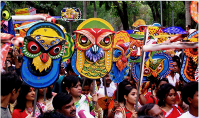
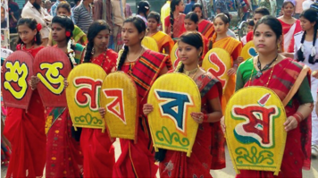
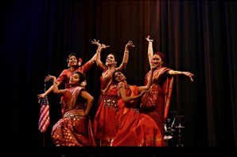
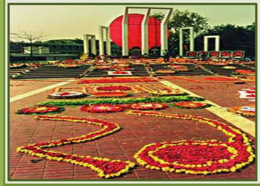
Food and Cuisine
Bangladeshi cuisines are influenced by different nations. Hindus, Buddhists,s and latterly Muslims rule Bangla. In the course of time of Bangladeshis are affected by their food habit. But maybe they are greatly influenced at the time of the Mughal reign.
Bangladesh has a rich culinary tradition with a variety of dishes that are unique to the country. Some of the most popular traditional Bangladeshi foods include:
- Shorshe Ilish (Hilsa Fish with Mustard Curry)
- Kacchi Biriyani (Mutton Biriyani)
- Beef Kala Bhuna (Beef Curry)
- Bhuna Khichuri with Dim Bhaji (Yellow Rice with Omelette)
- Sheek Kebab with Naan (Kebab with Flatbread)
- Dal (Lentil Soup)
- Bhorta (Mashed Vegetables with Spices)
- Fuchka
- Shingara
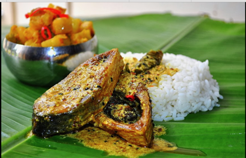
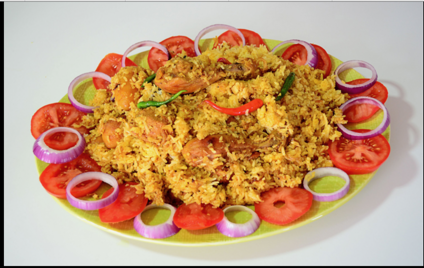
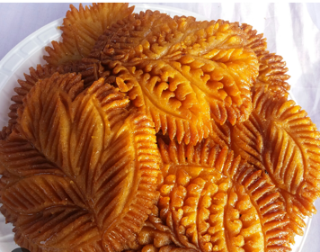
Arts and Crafts
Different types of arts are crafts seen in Bangladesh. Weaving, pottery, and terracotta, etc. are traditional in Bangladesh. Women of Bangladesh make Nakshi Katha. Arts in Rickshaw is also popular in Bangladesh. Folk Theater, Jatra, etc. are common in the rural side of Bangladesh.
Bangladesh is home to classical as well as folk dance forms and music. Classical music is closely related to the Hindustani style, while the dance draws influences from other classical dance forms of the Indian subcontinent, especially Bharatnatyam, Kuchipudi, and Manipuri. This nation also has a rich tradition of folk songs, with the lyrics containing elements of mysticism, spirituality, and devotion. Folk music also has a recurring theme of love. The Sufi influence on the music of Bangladesh mentioned above can be most prominently seen in Baul, which is a type of folk music. Rabindra sangeet, the songs written and composed by Nobel laureate Rabindranath Tagore, is also an integral part of the culture of Bangladesh.
Places to visit
Bangladesh has many famous tourist spots, including Cox's Bazar, which has a 120-kilometer-long beach, Sundarbans National Park, Lalbagh Fort, Saint Martin, Paharpur, Kuakata, Bagerhat, Sonargaon, Comilla, Bogra, Gaur, Barisal, Puthia, Ahsan Manzil Museum, and the Bangladesh National Parliament
Kuakata
Kuakata is a scenic travel paradise in the southern part of Bangladesh, known as the "Sagar Kannya" which means “Daughter of Sea”. It is one of the most beautiful and captivating places for traveling and leisure travelers. Not just in the country, Kuakata is now known all over the world. Standing at the same place on the beach, anyone can see the sunrise and sunset. Kuakata has a wide reputation for breath taking natural scenic beauty
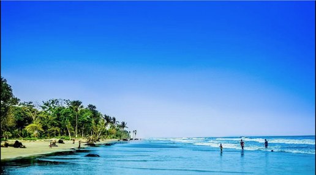
Sundarbans
The Sundarbans, a distinctive ecotourism destination, is the world's largest mangrove forest and is recognized as a UNESCO World Heritage Site.This remarkable forest is intersected by an intricate network of rivers, creeks, mudflats, and small islands and comprises two primary ecoregions: the mangrove forest and the freshwater swamp forest. It is the kingdom of Royal Bengal tiger and you will find various kinds of species of birds, animals & plants and I think you should visit the tranquilizing beauty of Sundarbans once in your life.
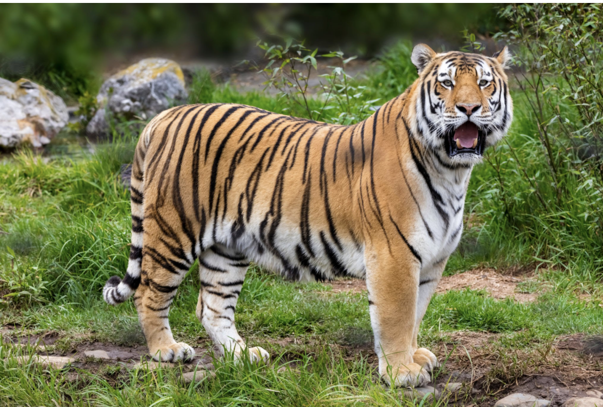
St. Martin Island
St. Martin's Island has one of the most extensive coral reefs in the world, making it a top spot for snorkeling and scuba diving. Visitors can rent gear and explore the colorful underwater world of the island.
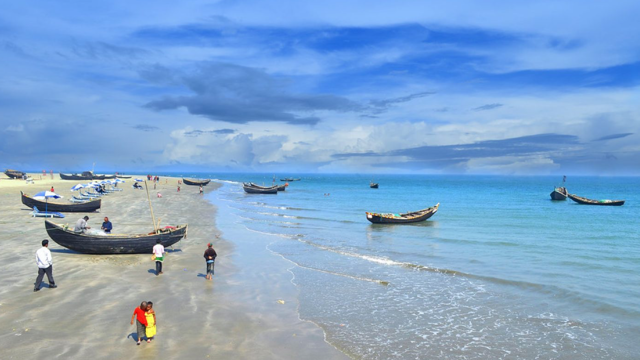
Paharpur
Paharpur is a popular archaeological site in Bangladesh where you can find the Ruins of the Buddhist Vihara. It gives evidence of the rise of Mahayana Buddhism from the seventh century onwards.
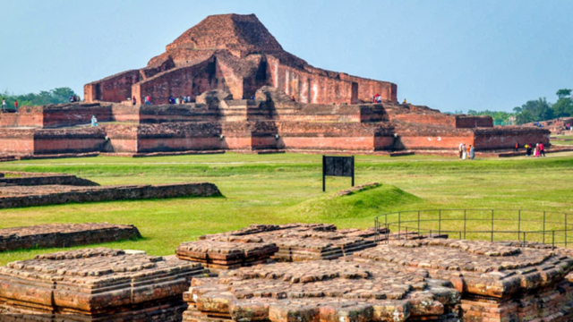